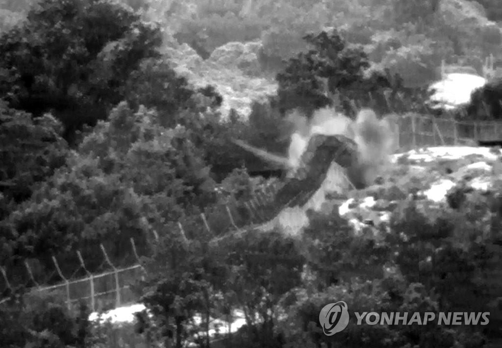
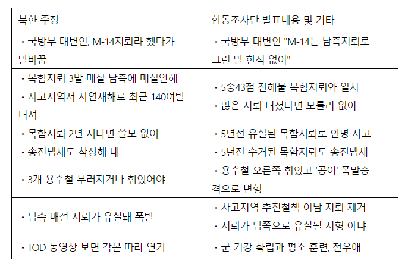

한미 간에는 이미 대북 타격 셈법을 놓고 이견이 첨예하게 대립한 사건이 있었다. 2015년 8월 비무장 지대에서 북한군이 매설한 목함지뢰에 한국군 2명이 부상을 당했다 (...) 나는 당시 주한미군 제 8군 사령관을 지낸 버나드 샴포 예비역 중장을 만나 의외의 일화를 들을 수 있었다.
샴포 전 사령관은 당시 미국은 한국 측이 강경 대응을 요구하자 어려운 입장에 놓였다고 회고했다. (...) "한국 측의 요구는 비례적 대응 원칙을 넘어선 것이었다"라고 말했다. 구체적으로 어떤 선택지를 요구했는지에 대해서는 함구했다. 그러나 "한국 측의 요구가 갈등을 더욱 확산시킬 개연성이 높았다"고 말했다.
- 2023, 김동현, <우리는 미국을 모른다>, pp.235~236
사실상 보복공격까지 고려할 정도로 매우 심각하게 반응함

그럴만 한게 북한은 사고 직후 천안함 사건의 신통한 복사판 이라는 최악의 개소리까지 발표하며 적극적으로 혐의를 부인함.
한국은 즉각 조사에 착수해 사고 6일 만에 북한의 소행으로 결과를 발표하고 책임을 물었으나 북한은 도리어 서부전선 포격 도발을 일으키며 군사작 긴장감을 고조시킴.
이후로도 북한은 합참의 조사결과에 정면으로 반박하며 변명을 늘여놓기 바쁘다가 결국 사건 발생 21일이 지나 북한이 조선중앙통신을 통해 아래와 같은 성명을 발표함.
“북측은 최근 군사분계선 비무장지대 남측지역에서 발생한 지뢰폭발로 남측 군인이 부상을 당한데 대하여 유감을 표명하였다.”
이번엔 과연 유감표명이나 할런지 모르겠네.
이제 교리가 비례대응 아니잖아 세배돌려주기면 뭐라도 해야지 병신들